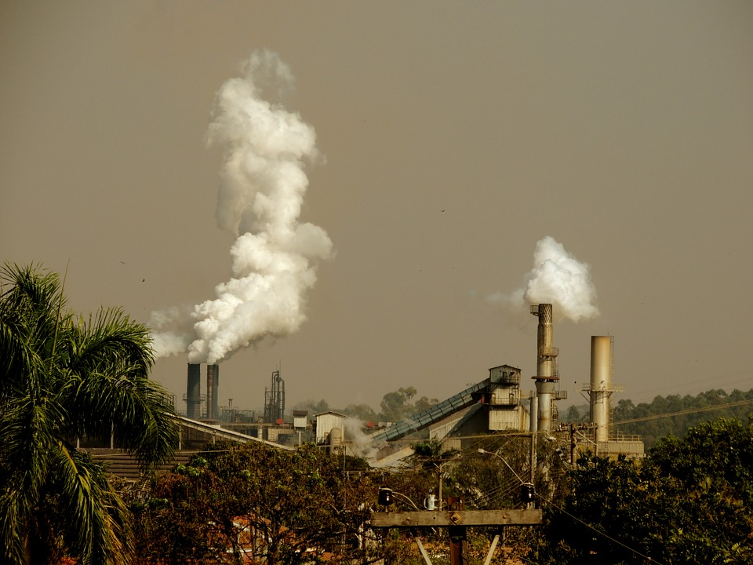

Population explosion 
The first and foremost emerging problem in the world is population explosion that directly impact in our environment
and every vital element of our environment such like water Tree,air,and many other things . It causes poverty inflation of
money, high price rate of daily commodities and creates thousands of problems which are too hard to solve us. On the other
hand for being increased population growth we destroy our valuable natural resources and make a devastated impact for
ourselves.
For the lacking of Trees and forest area CFC’S are increasing day by day for this reasons worlds temperature are
increasing which directly impact to melt polar ice caps and rise of sea levels which causes undergoing our firm land into
the water that directly impact a negative effect on our environment .It is true that by running or establishing an
atomic project which causes huge carbon dioxide gas in our environment though it’s a beneficiary side to create huge amount
of energy but it has hundreds of harmful sides yet people of the rich country run these projects rather to stop the project
as a result we can easily notice the intensiveness of natural calamities at present year comparing the past year.
Today it’s a normal matter to through our daily waste everywhere these waste melt and pollute our environment gradually
and spread out jams for this reasons our local people get sick easily. Open waste pollute our environment as well as our
surroundings but everyone know about the bad effect of waste but do not take immediate steps to save their living area .
At present the real situation are so dangerous that we hardly think because not only our land area but also our vast sea
level area are polluted extremely, for this reasons our sea water get polluted and produce huge amount of toxic chemicals
and that chemical fall a harmful effect in our sea living species . The industrial waste mismanagement is the main
responsible for this huge area pollution. If we can manage our industrial waste than we can save our sea level area
as well our environment as we know sea is the big source of human food so it s a necessary duty to save our see as
much as possible.